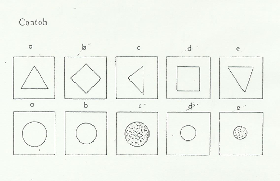
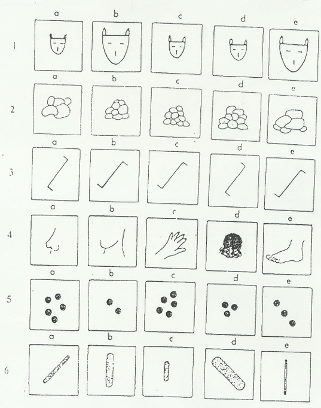
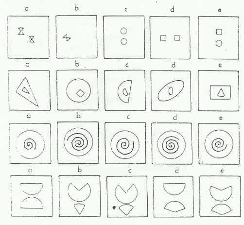
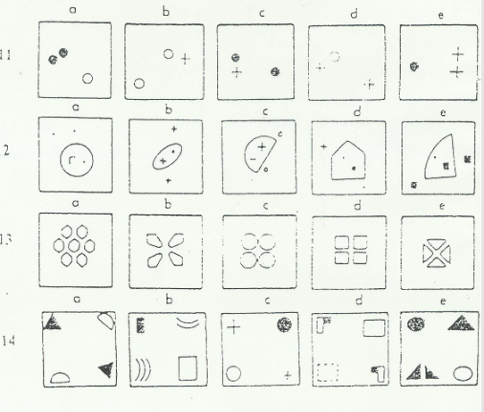

SIAP-SIAP MENUJU TES BERIKUTNYA : JANGAN MENUTUP HALAMAN ATAU MENEKAN
TOMBOL APAPUN - TES AKAN SEGERA DITUTUP.
CFIT Subtes Seri B
INSTRUKSI BAGIAN KEDUA
Pilihlah 2 gambar yang sama - sebangun - sepola. JADI Pilih 2 ya - jawabannya ada 2
Kerjakan CONTOH (Contoh 1 dan Contoh 2) terlebih dahulu.

Contoh 1:
Contoh 2:



KERJAKAN BAGIAN KEDUA MULAI
Kerjakan Sekarang Sekarang. Timer akan berjalan
setelah Anda menekan tombol di bawah.
PERIKSA LAGI ! WAKTU MASIH TERSEDIA.
Mohon diperiksa kembali - waktu masih ada.
Gunakan sisa waktu sebaik mungkin untuk memeriksa jawaban Anda.